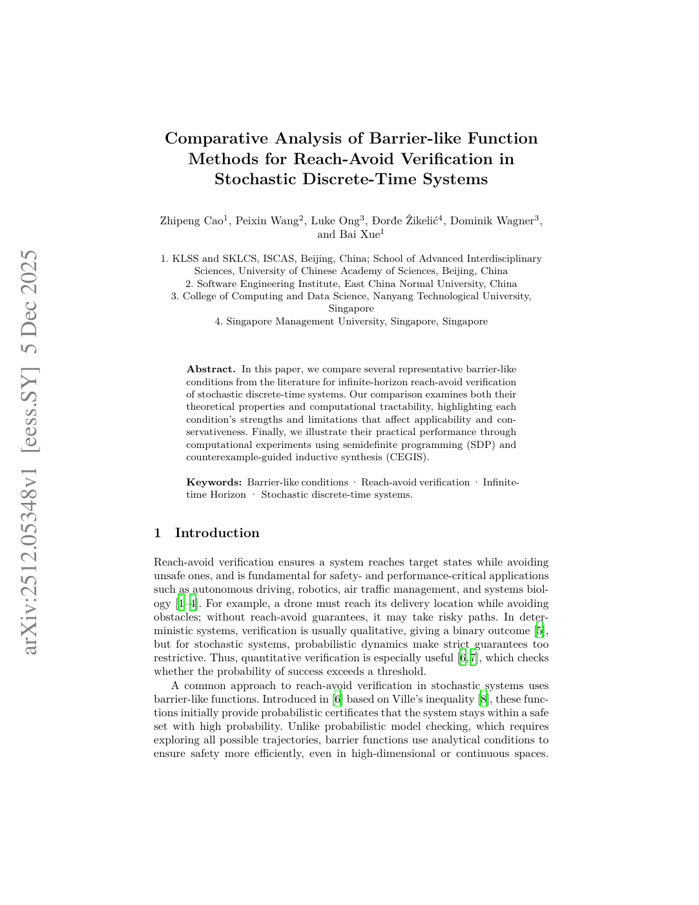

2025 · ARXIV PREPRINT
Comparative Analysis of Barrier-like Function Methods for Reach-Avoid Verification in Stochastic Discrete-Time Systems
A comparison of barrier-like conditions for infinite-horizon reach-avoid verification in stochastic discrete-time systems, examining their guarantees, conservativeness, and computational tractability.